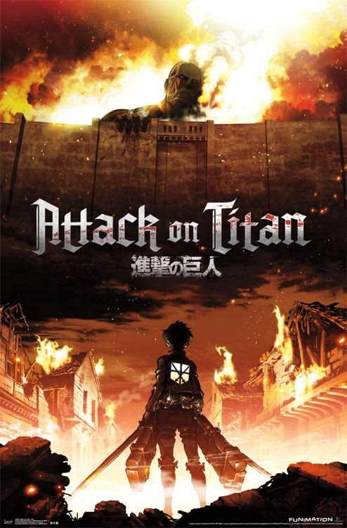
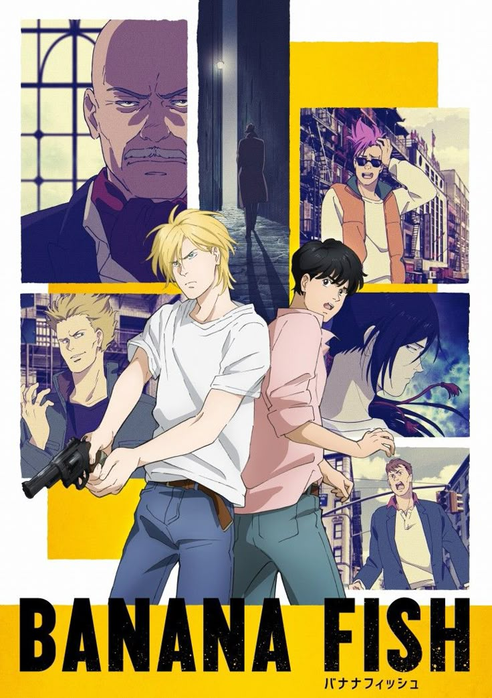
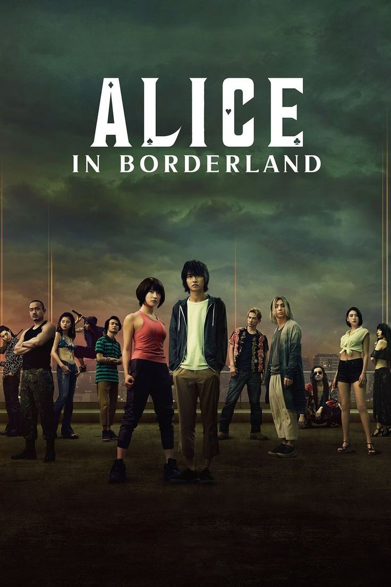

Hal yang Aku Sukai
Beberapa hal yang membuatku tertarik dan senang untuk terus mengeksplorasi.
Anime
Anime — yang merupakan serapan dari kata animation — selalu berhasil membuatku tertarik. Mulai dari visual, animasi, soundtrack, hingga alur cerita yang beragam membuatku merasa masih memiliki banyak hal untuk dieksplorasi dari karya berupa animasi ini.

One Piece
Anime favorit 🌊

Attack on Titan
Anime favorit ⚔️

Banana Fish
Anime favorit 🍌
J-Drama
Aku juga cukup menyukai J-drama. Saat ini, genre yang paling aku minati adalah crime, mystery, dan thriller.
Unnatural
Crime • Mystery • Medical

Alice in Borderland
Mystery • Thriller
Liverleaf
Drama • Thriller
J-Pop
Tidak jauh berbeda, aku juga sangat suka mendengarkan lagu-lagu Jepang yang beragam dan memiliki ciri khas dari setiap penciptanya. Dalam J-pop, ada banyak sekali musisi, band, Vocaloid, Utauloid, hingga insert song yang aku dengarkan. Rasanya selalu ada lagu baru yang menarik untuk ditemukan.
-
🎵「僕らだけの主題歌」centimillimental
-
🎵「Prayer X」King Gnu
-
🎵「ハルカ」YOASOBI
Aku selalu terbuka untuk mencoba hal-hal baru dan menemukan sesuatu yang bisa membuatku berkembang. 🌱